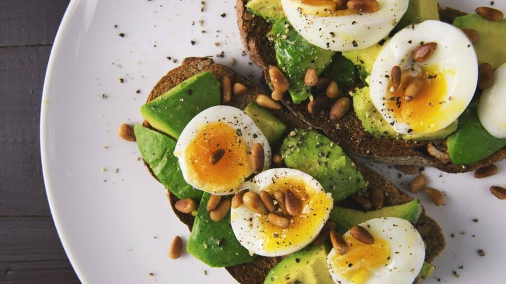
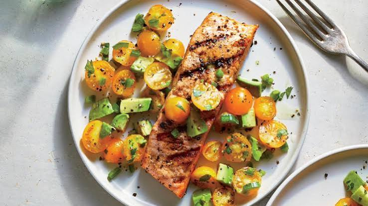
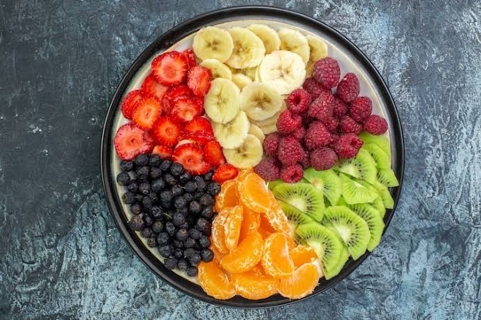
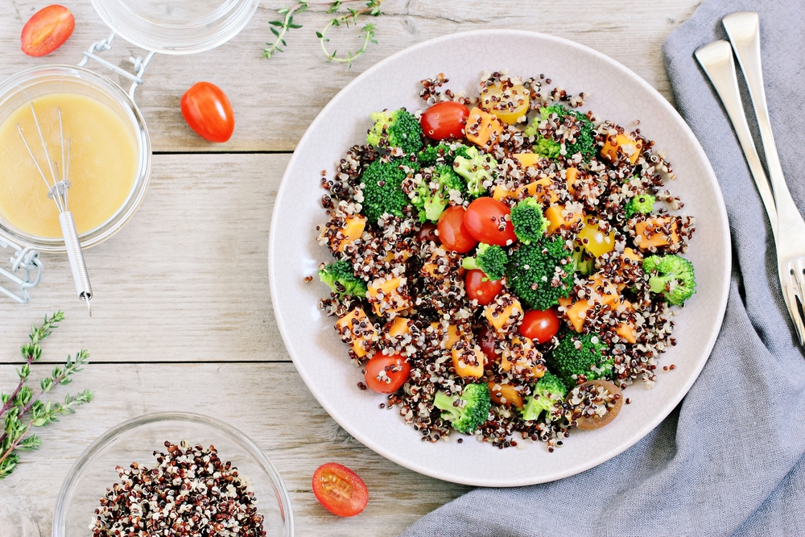
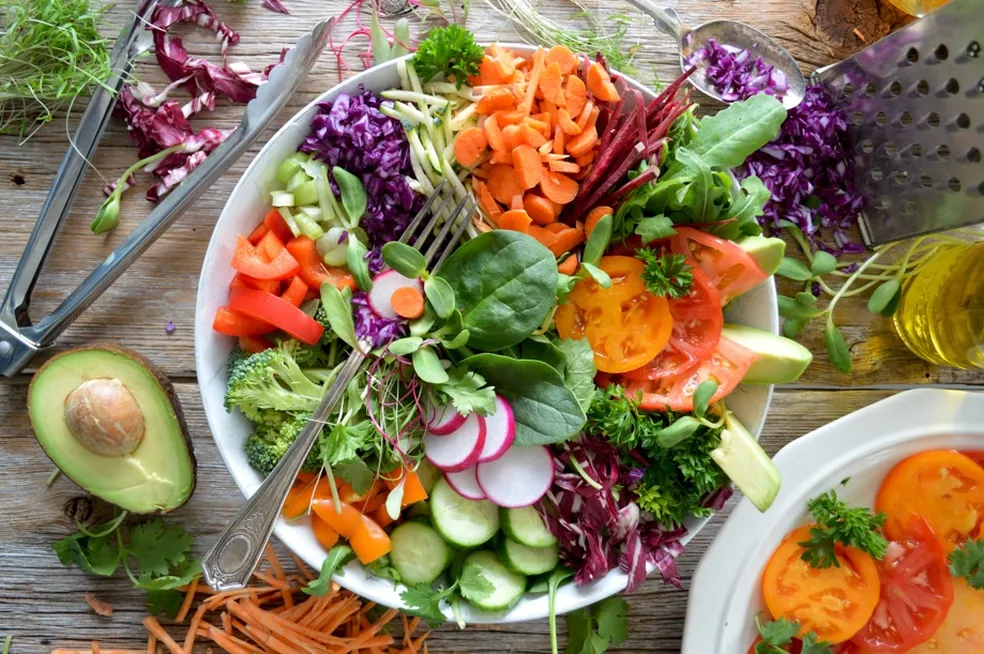
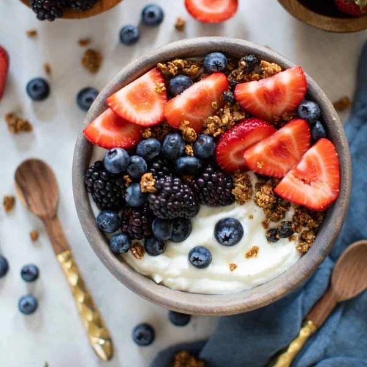

PROTEÍNASOvo cozido
155 kcal
Porção: 100 g
Proteína: 13 g
+ Adicionar ao diárioDiário Alimentar e Registro Nutricional
BIBLIOTECA NUTRICIONAL
Consulte informações nutricionais verificadas, compare opções e adicione alimentos ao seu diário em poucos cliques.

PROTEÍNAS155 kcal
Porção: 100 g
Proteína: 13 g
+ Adicionar ao diário
PROTEÍNAS208 kcal
Porção: 100 g
Proteína: 20 g
+ Adicionar ao diário
FRUTAS160 kcal
Porção: 100 g
Proteína: 2 g
+ Adicionar ao diário
CARBOIDRATOS120 kcal
Porção: 100 g
Proteína: 4,4 g
+ Adicionar ao diário
VEGETAIS35 kcal
Porção: 100 g
Proteína: 2,4 g
+ Adicionar ao diário
LATICÍNIOS63 kcal
Porção: 100 g
Proteína: 5,3 g
+ Adicionar ao diário